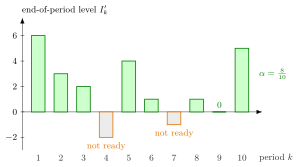

Ready Rate¶
Definition¶
In a periodic-review single-item inventory system with end-of-period inventory level , the ready rate over periods is the fraction of periods that end with a non-negative inventory level,
and the long-run ready rate is its limit as , when this limit exists. Since exactly when , a period counts as ready when the stock at its start covers all of its demand and no backlog is left at its end.
Interpretation¶
The ready rate answers a yes-or-no question for each period: did the period end without any customer waiting? It is the share of periods with the answer yes, so it measures how often the shelf is "ready", not how much demand was served.

The bars are the end-of-period levels of the policy with lead time (Example 1). Periods and end with a backlog and are not ready; the other eight, including period with , are ready, so .
Each part of the definition matters. The level is taken at the end of the period, after the demand, because a shortage shows only then. The test is , so a period that empties the shelf exactly still counts as ready. A period with a backlog carried over is not ready even if no new demand arrives. And every failure counts the same: a period short by one unit and a period short by ten units each lower by , which is why the fill rate is a separate measure. The ready rate is an average of indicators, the inventory analogue of the time-average state probability of a queue. A high ready rate is not always the goal: when holding a unit costs much more than backlogging it, the best service levels are close to zero (Exercise 2.5.7). In Week 5 the long-run ready rate of a base-stock policy becomes the probability .
Key Results¶
- , and .
- Under a base-stock policy with i.i.d. demands, , the distribution function of at , with the lead-time demand independent of the period demand (formula (5.7.1) and TF 5.7.1); see Base-Stock Inventory Distribution.
- As a function of this ready rate is nondecreasing, since a distribution function is.
- Under a policy, , the average of the base-stock ready rates over the levels of the uniform position (formula (5.8.1)).
- The ready rate, the fill rate and the cycle service level generally differ on the same sample path.
Examples¶
1. Counting ready periods. Under the policy with , and demands , the start levels are and the end levels . Only and are negative, so . Period , with no demand, is ready, and so is period , which ends with .
2. Not ready without new demand. With the same policy and demands but lead time , the order placed at the start of period arrives only at the start of period , and . Period has , yet : the period is not ready, because customers from period are still waiting.
3. Size does not matter. Two periods with start stock , one with demand and one with demand , both end below zero and both count as one failure, although the first leaves unit unmet and the second . Measured in units, as the fill rate does, the second period is ten times as bad.
4. Setting a target. For the notes' Lighthouse base-stock case (lead time ), the ready rate is at , at and at (Section 5.7). A target therefore requires , two units above the cost-minimizing level .
Prerequisites¶
Related Concepts¶
- Fill Rate
- Cycle Service Level
- Base-Stock Policy
- Base-Stock Inventory Distribution
- (Q, r) Policy
- Lead-Time Demand
- Time-Average State Probability
Sources¶
- Stochastic Operations Research · Week 2
- N. D. van Foreest, Sample Path Analysis and Simulation of Stochastic Systems, Section 2.5
Aliases: alpha service level, non-stockout probability per period, period service level Keywords: \alpha, I_k' \geq 0, end-of-period inventory level, \alpha = P(X + D \leq S), service level, stockout, backlog Symbols: alpha, beta, infinity, sum
Last updated: 29 October 2026 20:42
Ready RateBase-Stock Inventory DistributionCycle Service LevelFill RateInventory LevelSingle-Item Inventory SystemIndicator Random VariableBase-Stock Policy(Q, r) PolicyLead-Time DemandTime-Average State Probability